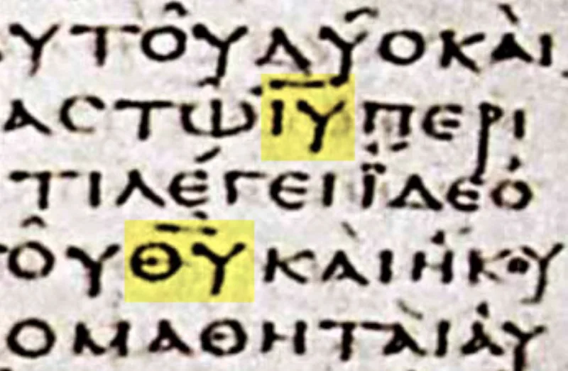

'Jehovah' added 237 times, in no Greek manuscript
UnrefutedNo good counter-argument has been published by the Watchtower.
What was added
Their Bible prints "Jehovah" 237 times in the New Testament. About 5,800 Greek manuscripts of the New Testament survive.
The name YHWH appears in none of them. Every one reads Kyrios, "Lord," or Theos, "God."
What the Watchtower cites for it
Their support is a set of "J documents." You can see them listed in their own Kingdom Interlinear. Most are Hebrew translations of the New Testament.
They were made between the 1300s and the 1900s. They were made from the very Greek text they are used to correct.
Their best answer, at full strength
George Howard published a real thesis in 1977 in the Journal of Biblical Literature. Old Greek copies of the Old Testament, such as Papyrus Fouad 266, wrote YHWH in Hebrew letters inside the Greek.
So New Testament writers quoting them may have done the same. Scribes may have swapped it out later.
On that view the NWT restores the name, and does not insert it. Jesus also said he made God's name known (John 17:6).
Where that runs out
Howard's idea covers only direct Old Testament quotations. That is a minority of the 237.
It rests on no New Testament manuscript at all. Howard himself protested that the Witnesses made too much of his article.
And look at where the name is left out. It is not inserted at Philippians 2:10-11, quoting Isaiah 45:23, or at 1 Peter 3:15, quoting Isaiah 8:13.
Those are the places where the name lands on Jesus.
How strong is this argument?
Strong for you. At Romans 10:13 the inserted name cuts Paul's argument in half, since verse 9 is about the Lord Jesus.
No manuscript find has ever backed one of the 237.
What to say
"If the name belongs in Romans 10:13, why is it kept out of Philippians 2:11, where the same Old Testament words are used of Jesus?"


How they answer this — at its strongest
A peer-reviewed thesis by George Howard says the name was restored, not added.
The strongest defense is George Howard's thesis of 1977, in the Journal of Biblical Literature. It was peer reviewed. Some pre-Christian copies of the Septuagint, the Greek Old Testament, wrote YHWH in Hebrew letters inside the Greek text. Papyrus Fouad 266 is the standard example. So writers quoting them may have done the same. Later scribes may have swapped it for the short forms known as nomina sacra. On that view the NWT restores the name and does not insert it.
The Watchtower adds three points. Jesus said he 'made your name known' (John 17:6). Kyrios in Old Testament quotations plainly stands for YHWH. And the J documents show where Hebrew translators judged the name to belong.
The verdict
Strong for you: no Greek manuscript has ever backed one of the 237.
Howard's idea is real scholarship. But it covers only direct Old Testament quotations. Those are a minority of the 237. And it rests on no New Testament manuscript at all. Howard himself protested that the Witnesses made too much of his article.
The J documents are circular. Late Hebrew versions of the Greek cannot testify against every surviving Greek copy. Most telling is the inconsistency. The name goes in where it guards the Father's uniqueness. It is withheld where the same Old Testament texts land on Jesus.
A translation that corrects 5,800 manuscripts 237 times on instinct has stopped translating. No manuscript find has ever backed one of the 237.
Sources
- George Howard, 'The Tetragram and the New Testament,' JBL 96/1 (1977)
- Tetragrammaton.org — Appendix A: the 'J' Reference Sources
- Wikipedia — Kingdom Interlinear Translation
- NWT Appendix A5 (Watchtower's own defense)